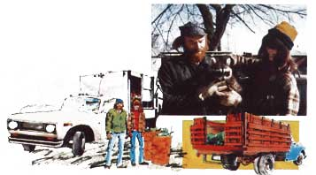

"We've gotten so much help and encouragement from MOTHER's articles about independent, self-sufficient people," says Nebraska's Maureen J. Pace, "that my family thought it only fair to tell other MOTHER readers about the success of our own little business venture and way of life!"
Three years ago my husband Larry, our two sons (then six and four), and I moved to central Nebraska . . . with a clear idea of exactly what we were going to do once we got there: We were going to live a back-to-basics life while we supported ourselves by operating an established garbage route that we had made arrangements to take over.
Imagine our distress, then, when-with the family transplanted, winter setting in, and our bank account reading absolute zero-we learned that our business deal was being called off by the other party! To say that our life looked like a nightmare at that point would be a gross understatement.
Fortunately for us, however, Larry is no quitter. He's a strong man with a head of curly red hair, a full red beard, and a mind that is just as filled with fiery determination. "Well," he said, "if our first opportunity has flown the coop, another one is just as surely waiting for us to find it. As a matter of fact, I believe we'll all be happier if we just buckle down and build our own garbage route from scratch by ourselves anyway."
The next day-armed with a paper full of figures-my husband visited the local banker, and persuaded him to loan us enough money ($800) to see our proposed new business through its first few months. Then, with the grubstake and an old Chevy farm truck that we borrowed from Larry's parents, we set out to make that business a reality.
From the very first, we've operated our little enterprise strictly according to four guiding principles that we've never changed and never broken:
[1] We take on only as many accounts as Larry and I, together, can handle. We both have always felt that hired help would lust be an unnecessary bother, complication, and drain on an operation that we prefer to run as a small family business. We are both bona fide MOTHER types. Our venture was never intended to earn "big" money. Instead, my husband and I want only enough cash coming in to give us financial security, support us comfortably (not elaborately), give us a maximum amount of time with each other and our boys, and guarantee us freedom from anyone else's time clock.
[2] We make do with the equipment we have on hand or that we can buy with the money we already have. (Example: A new truck would be nice right now, but we absolutely refuse to indebt ourselves the $10,000 or $15,000 it would cost.) Thanks to Larry's considerable mechanical ability, we've made this rule stick . . . and we believe it's one of the biggest reasons we've been able to get ahead the way we have.
[3] We bill our customers monthly, and we personally collect quarterly from any patrons who don't send in their monthly payments. By adhering to this principle, we've prevented our accounts from building up large, overdue, difficult-to-pay, semi-annual or yearly bills . . . and we've almost never been stuck by a real deadbeat.
[4] We find it much easier to handle all our expenses (such as daily landfill fees and gasoline bills) on a daily "pay as we go" basis, instead of letting them build up on monthly charge cards or charge accounts. This keeps us on an extremely rigid "we know exactly where we stand at all times" budget that has been invaluable in keeping us debt-free.
Once Larry and I had agreed on our four basic, inflexible rules . .. we began. And, folks, all I can say is: Starting up our own business was HARD WORK (which, in the end, was worth every ounce of the effort we put into it).
Each morning-as soon as Nubie, our big boy, was off to school-we piled little Andrew into the truck with an assortment of snacks and toys, and began recruiting accounts throughout all the small towns and rural areas within a 40-mile radius of our home. Needless to say, we quickly learned to deal with county boards, village councils, hauling permits, licenses, bonds, inspections, and all the other small details that our business required us to cope with. Larry and I found that these bits of red tape were relatively easy to handle when we took them on one by one . . . instead of trying to tackle 'em all in a single humongous lump.
Many of the people we approached, being "small-towners", had never had a regular garbage service offered to them before and were delighted that someone was taking on the job. (In all the recruiting we've done, we've never once been met with a hostile attitude. When you meet people with a friendly and sincere proposition, you're bound to get a positive reaction.) And a substantial portion of the folks who initially turned us down, soon got so used to seeing us make our rounds every week . . . that they eventually signed up with us on their own.
Within three months of our start, we had 150 regular accounts. That tally had climbed to 230 by the end of our first year in business ... and we reached our self-imposed "limit" of 300 customers long before the second year was over. We then stopped knocking on doors and cut our advertising down to one small ad in the local weekly newspaper. And believe it or not, folks, right now-as we complete our third year of operation-we're servicing 450 regular patrons, spread out over eight small towns, and we're busy all the time!
Now, as you probably can imagine, hauling that much garbage in an old farm truck (without a hoist yet) is out of the question for two people. So, as our business mushroomed (and, once again, with Dad Pace's help), we made a deal on a 1970 International, 13-yard, side-loaded, "real" garbage truck. The vehicle had been declared a "total loss" by an insurance company and we were able to buy it for only $1,000. Then we invested another $489 in a rebuilt transmission for the truck and looked forward to the day when we'd be able to repair the side-loader and put it into service.
Well people, Larry and I installed that silly transmission ourselves late one night during the spring of our first year of operation. I remember the evening well, because that was the night I converted myself into the world of "hells" and "damns" forever (putting a transmission in a truck is THE PITS!).
The next day, however, all the hard work we had done really was worth it . . . and then some. Instead of picking, pulling, raking, tugging, and pushing tons of ashes and trash off the flatbed of the livestock truck we had been using . . . we simply raised the hatch on our new garbage hauler and let the blade roll back and effortlessly (for us) dump the whole load in minutes. Larry and I thought we had the world by the tail the first time we saw that happen!
We charge a "regular" family $1.50 a month for once-a-month pickups, $3.50 for weekly service, and 54.25 for twice-weekly stops. Retired folks and single residents both produce less garbage than "regular" families, and-for this reason-both are charged somewhat less ($2.50 for once-a-week pickups, for instance, instead of $3.50). We have a sliding scale for commercial accounts, depending on volume and frequency of service.
Our business has been growing constantly since Day One, which makes it a little difficult to give you specific "averaged out" yearly earning figures for the operation ... especially in its earliest days, when we were heavily supplementing the garbage route with odd hauling assignments and a parttime night watchman's job. Remember, too, that our operating expenses run somewhat less than 25% of our gross . . . which means we net out a little over 75% of the total number of dollars that we handle.
When you keep all that in mind, it becomes more meaningful to learn that our trash route grossed about $6,600 (netted roughly $5,000) during its first year . . . $16,000 ($12,000) on a schedule of four short workdays a week the second ... and $23,000 ($17,250)-counting extra hauling and the sale of scrap-when operated on a full five-days-per-week basis throughout most of year three .
I do want to take the time here to emphasize that the monthly payments we receive for our services add up to only the first of several ways we profit from our business. For instance, there are also the odd jobs (which mostly involve one form or another of hauling) that are offered to us nearly every day we're on the job, we've hauled everything from tree limbs to cast-iron bathtubs and, once, we even picked up over $300 by moving a lady to Omaha!
Actually, there's more of this kind of work going begging than we want to do and we always have a rotating list of customers waiting for us to get around to them. That list, of course, is just like money in the bank: Whenever one of us wants to pick up an extra twenty or thirty dollars on a Saturday, we just go down the lines to the next name ... and there it is! (The best deal of all is the owner of the local roofing company who pays us $15 a load to use our truck . . . and he does all the work!)
We also put bonus bucks in our packets by recycling all the scrap metal (everything from small bolts to parts of old car bodies) that we find in our daily collections of garbage. This material is squirreled away and saved until the scrap market hits its yearly high (usually during the cold months) and then sold all at once to a salvage yard.
The prices we receive for our recycled metal vary considerably (not much for tin, a lot for copper) but any time we take in a load of anything we figure we'll average at least $100. (One load of aluminum cans recently enriched the bank account by over $400!)
We collect and sell newspaper and cardboard too, and the whole recycling end of our business is nearly 100% profit. This is "found" money .. . the cash we spend on the extravagant "extras" that everyone wants from time to time: a long-dreamed-of vacation for Larry . . . a new motorcycle and flying lessons for me . .. and bicycles, a go-cart, and a minibike for the boys. It's no wonder we all enjoy this end of our operation so much!
Yet another profitable offshoot of our basic garbage hauling business involves the buying and selling of "burn barrels". We purchase 55-gallon steel drums by the truckload for $2.00 apiece .. . and then sell them to our customers for $5.00 each. Sure, it's a minor inconvenience to lug the containers around as we travel our route. But the sideline does provide our patrons with a needed service and we sell at least a half dozen of the barrels a week (which adds up to about one thousand extra dollars over the course of a year). Everyone involved, in short, benefits from the idea and we're going to continue offering the drums.
Probably the biggest side benefit of all that we realize from our garbage business is the incredible number of "finds" we pick up each week. Believe me. You'll never know what an affluent and wasteful nation we live in until you follow us around our route just once. The things that people discard as "useless" would make our pioneer parents weep!
Larry and I have furnished our home with perfectly good items that our customers have thrown away as "too old", "unstylish", or "too worn looking". That's how we got our stove, refrigerator, clocks, radios, lamps, electric can opener, and almost all our furniture ... and we're proud of it. We figure we're way ahead of most of our contemporaries (whose furniture and appliances-which usually look no better than ours-seem to be accompanied by an endless stream of monthly installment payments). We consider it a blessing to be free of the "keep up with the Joneses" syndrome.
Still another "extra" that our business lavishes on us is the reoccurring opportunity it gives us to meet, become friendly with, and set up swaps with our customers. Larry hails from a long line of "horse-traders" and his best days are the ones in which he arranges a happy barter deal of some kind.
One of the older retired fellows on our route, for instance, needed our service . . . but really couldn't afford a monthly garbage bill. He, however, did enjoy building some fine doghouses out of scrap lumber. You guessed it! All our dogs now live in snug, individual, paneled and shingled houses .. . and we have one more regular stop where we both pick up the garbage and "shoot the breeze" a bit.
I suspect I could spend the rest of the day tellin' you how wonderful our little do-it-yourself business is and how much we love it. Let me cut myself short, though, by just sayin' that Larry, the boys, and I are rich. Not rich in actual dollars, of course ... but rich in everything that really matters.
It's hard to define "wealth", you know, since everyone's ideas on the subject are really only matters of opinion anyway. But if anybody asked us, t reckon we'd all say that the Pace family is wealthy.
The four of us like to live so simply that we more or less feel the income we currently net from our garbage route is a downright luxurious amount of money. That-plus the cash we realize from ail our sidelines added onto the money we save by raising a garden, keeping chickens, burning wood salvaged from our main business, etc.-certainly combine to give Larry, Nubie, Andrew, and me a feeling of great abundance and security.
And we have so much more too! For instance: the joy of providing ourselves with all this bounty while working strictly for ourselves, unpressured, and at our own pace.
Then too, there's all the time we have for each other. Except for the time they spend in school, Larry and I are always available to both our boys . . . and we're always available to each other: Yes, my husband and I work together-on our own and outdoors, no matter what the weather-every day. And, believe it or not, we get along famously! I guess, when you constantly fight 200-pound burn barrels for a living, you don't have much yen to fight each other too!
So listen, folks: If you're ever in mid-Nebraska, driving along Highway 30, and you spot a tall, skinny girl driving an old gray garbage truck . . . wave to the redhead riding on the side! And go ahead and stare! Beneath all that dirt and ashes, there are two more happy MOTHER readers . . . just doin' their own thing!
|
 |
|
|